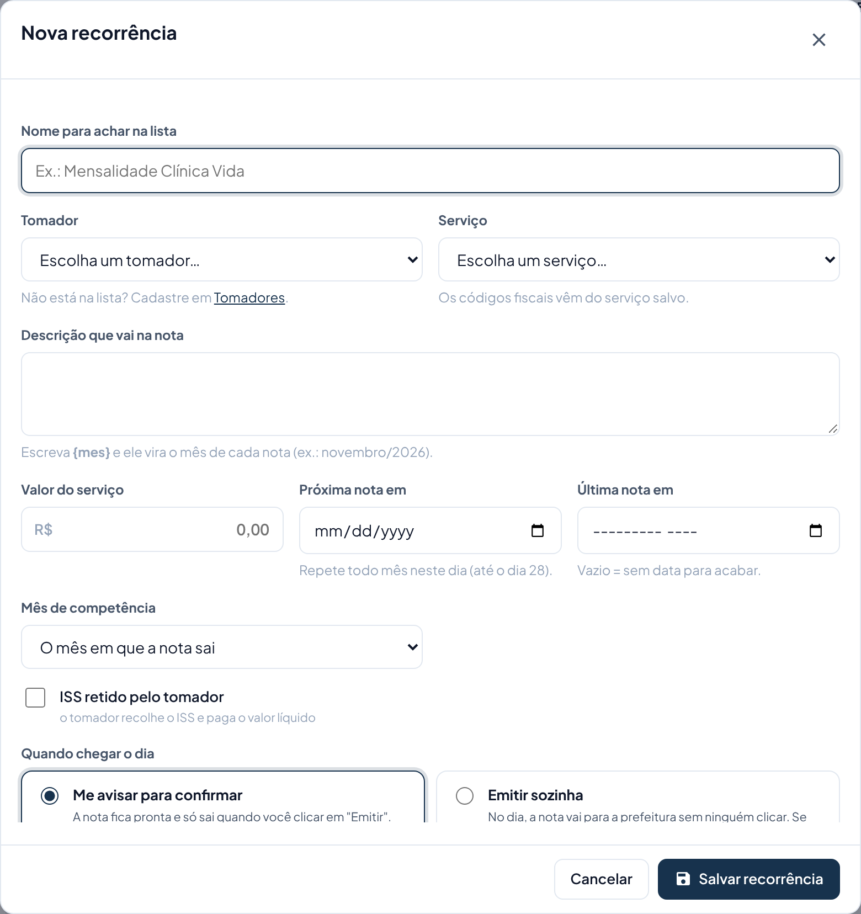
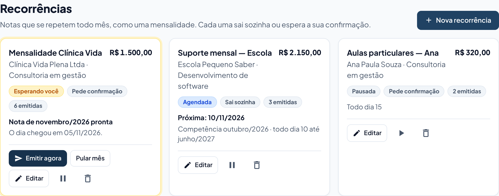

Recorrências: a nota de todo mês
Para mensalidades e contratos: cadastre uma vez e a nota se repete todo mês.
checklist Antes de começar
- O tomador e o serviço precisam estar cadastrados (veja Tomadores e serviços).
- Decida se a nota deve sair sozinha ou esperar você confirmar (explicado no passo 2).
-
Abra "Recorrências" e clique em "Nova recorrência"
No menu, clique em Recorrências e depois em + Nova recorrência.
-
Preencha a recorrência
- Nome: para achar na lista (ex.: Mensalidade Clínica Vida).
- Tomador e Serviço: escolha na lista.
- Descrição: use
{mes}para o mês mudar sozinho a cada nota. - Valor e Próxima nota em: a data da primeira nota. Repete todo mês nesse dia (até o dia 28).
- Última nota em: deixe vazio se não tem data para acabar.
- Mês de competência: "o mês em que a nota sai" ou "o mês anterior", se você fatura o serviço já prestado.
Em Quando chegar o dia, escolha:
- Me avisar para confirmar (recomendado se o valor pode mudar): a nota fica pronta e só sai quando você clicar em Emitir agora.
- Emitir sozinha: no dia, a nota vai para a prefeitura sem ninguém clicar. Se der problema, você é avisado.
Clique em Salvar recorrência.

-
Quando o dia chegar
Se a recorrência pede confirmação, o cartão fica amarelo com Esperando você e o menu mostra um número. Confira e clique em Emitir agora, ou em Pular mês se não houver nota neste mês.

O botão ⏸ pausa a recorrência (o ▶ retoma) e a lixeira apaga. As notas já emitidas não são afetadas.
O que cada situação quer dizer
| Situação | O que significa |
|---|---|
| Esperando você | A nota do mês está pronta e espera você clicar em Emitir agora ou Pular mês. |
| Agendada | Tudo certo. Mostra a data da próxima nota. |
| Pausada | Não gera notas até você retomar. |
| Encerrada | Passou da "Última nota em". Não gera mais notas. |
Se der errado
| O que aconteceu | O que fazer |
|---|---|
| O cartão mostra "Não saiu sozinha". | Leia o motivo, corrija (no tomador, no serviço ou na recorrência) e clique em Emitir agora. Se não fizer nada, o sistema tenta de novo no dia seguinte. |
| O tomador não aparece na lista. | Cadastre em Tomadores e abra a recorrência de novo. |
| Quero mudar o valor a partir do próximo mês. | Clique em Editar, mude o valor e salve. As notas já emitidas não mudam. |
← Voltar para a Central de Ajuda
Última revisão: 07/11/2026